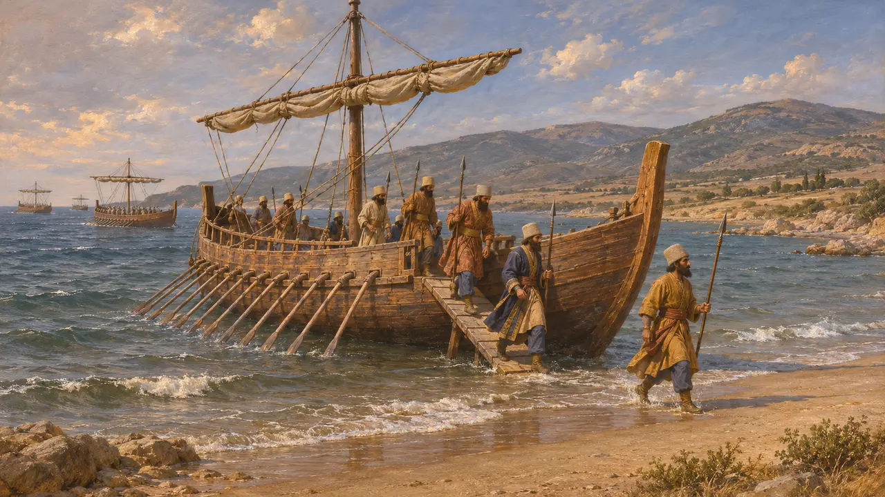
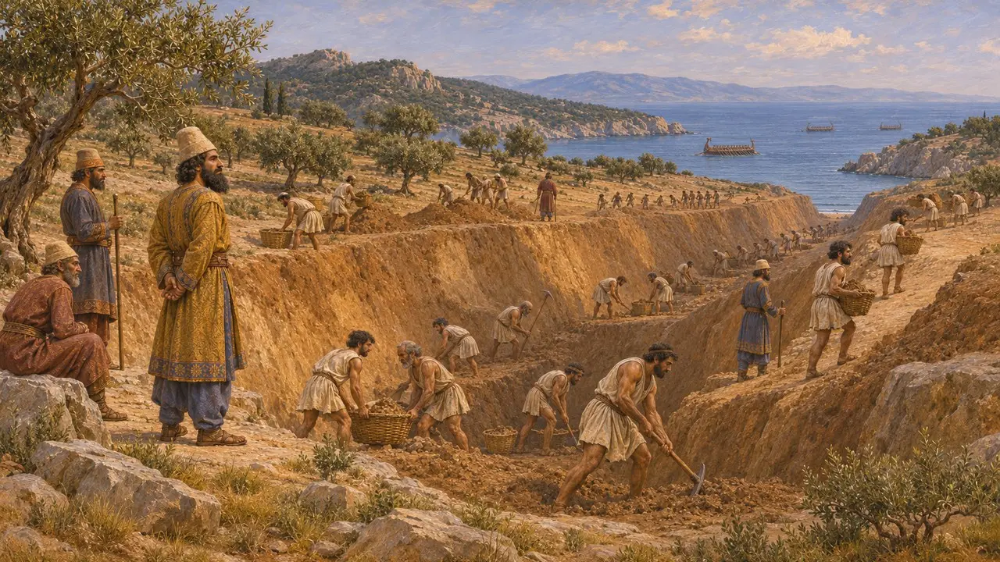
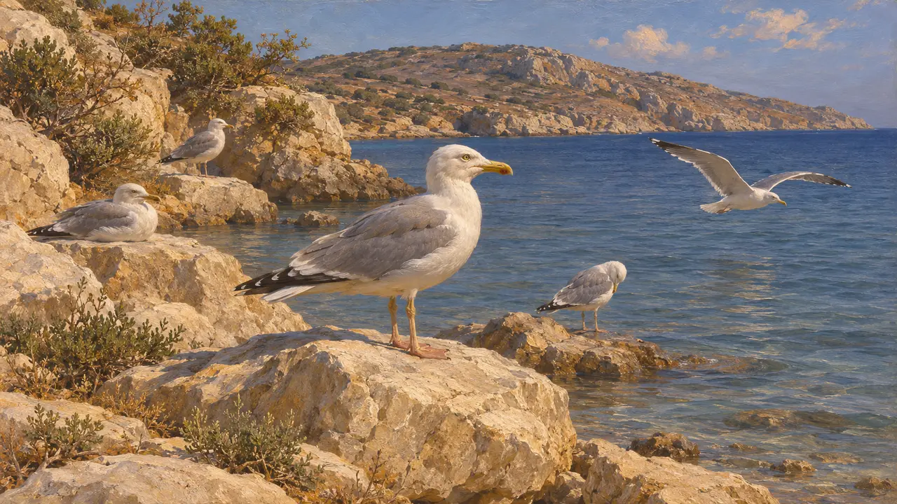
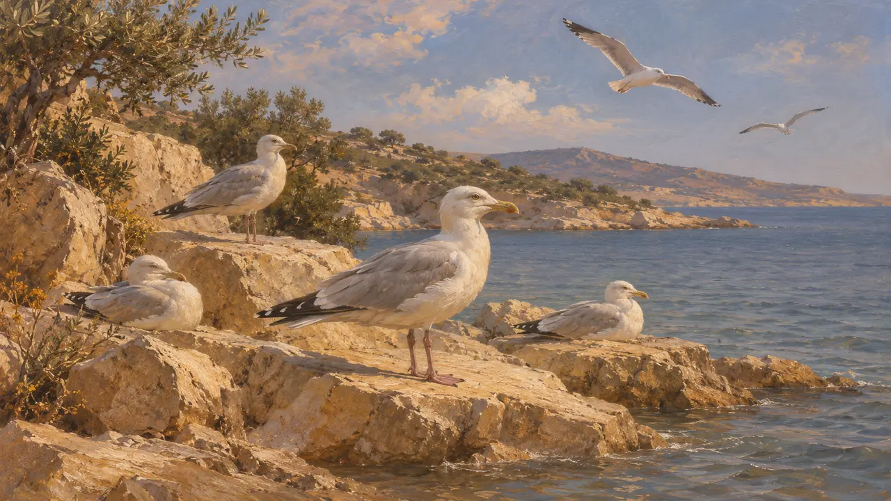

Энциклопедия › Животный мир и погода

Чайки
Морские птицы на берегах Эгейского моря во время походов 490–479 гг. до н. э.
В игре: Уровень 8: Марафонская бухта, Уровень 9: Канал, Уровень 10: Жаркие Ворота
Чаек тянет к побережьям, где в Греции сражались персидский флот и армия. Ни один древний источник не связывает их с этими походами, поэтому их место в игре определено обстановкой, а не сообщённым фактом. Море определило весь ход войны, и птицы подчёркивают эту обстановку.
В игре: Игра рисует чаек как птиц в небе на уровнях «Афон», «Марафон» и «Фермопилы». Это только элемент пейзажа, и ни одно правило их не учитывает. Их присутствие — выбор ради атмосферы, а не сведения из источника.

Побережье, которое источники описывают без чаек
Античное свидетельствоГеродот подробно описывает высадку при Марафоне, прорытие канала через Афон и сражение при Фермопилах. В приведённых здесь отрывках он говорит о кораблях, ветрах и берегах, но чаек в них нет. Поэтому любая чайка на этих берегах добавлена современным читателем, а не древним автором.
Herodotus 6.102

Море в рассказах о походах
Античное свидетельствоГеродот говорит, что буря разбила большую часть флота Мардония у Афона в 492 г. до н. э. Позже он сообщает, что Ксеркс велел прорыть канал через полуостров, и называет причиной гордыню и желание показать свою мощь. Это повествование показывает, насколько война зависела от моря, но птиц оно не упоминает.
Herodotus 6.44

Морские птицы в греческих текстах
Античное свидетельствоАристотель, писавший в IV веке до н. э., рассматривает морских и береговых птиц в своих трудах о животных. Его тексты показывают, что греки хорошо знали таких птиц, но ни одну чайку они не связывают с какой-либо определённой битвой.
Aristotle, History of Animals

Что предполагает игра
СпорныйЧайки живут на берегах Эгейского моря и сегодня, и ничто в источниках не говорит о том, что на побережьях Аттики, Афона или Малийского залива в древности не было морских птиц. Это вывод из современности, а не документально подтверждённый факт для какого-либо одного вида. Игра использует чаек лишь для колорита.
Herodotus 7.22-24
Источники
- Herodotus 6.44
- Herodotus 6.102
- Herodotus 7.22-24
- Aristotle, History of Animals